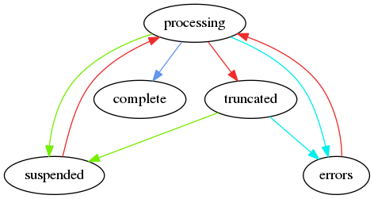
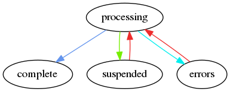
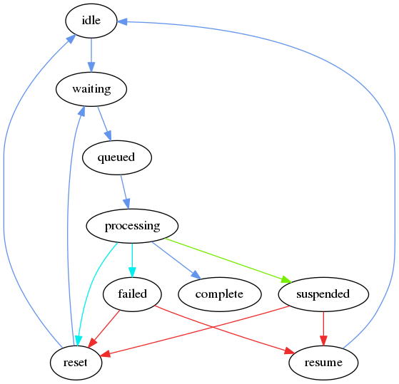

Lifecycles¶
There are several lifecycles in the server, and here we shall focus on datasets, jobs, and tasks.
Color Key
- blue - standard flow
- cyan - standard flow that can be overridden
- green - debug flag override
- red - manual intervention
Datasets¶
Jobs¶
Tasks¶
- idle: tasks in global queue
- waiting: tasks in local queue
- queued: tasks queued to a batch system
- processing: tasks are running
- suspended: if
debug = Truesuspend instead of reset or fail - reset: shallow reset
- by default goes back to waiting
- if reset >= 3, back to idle
- resume: hard reset